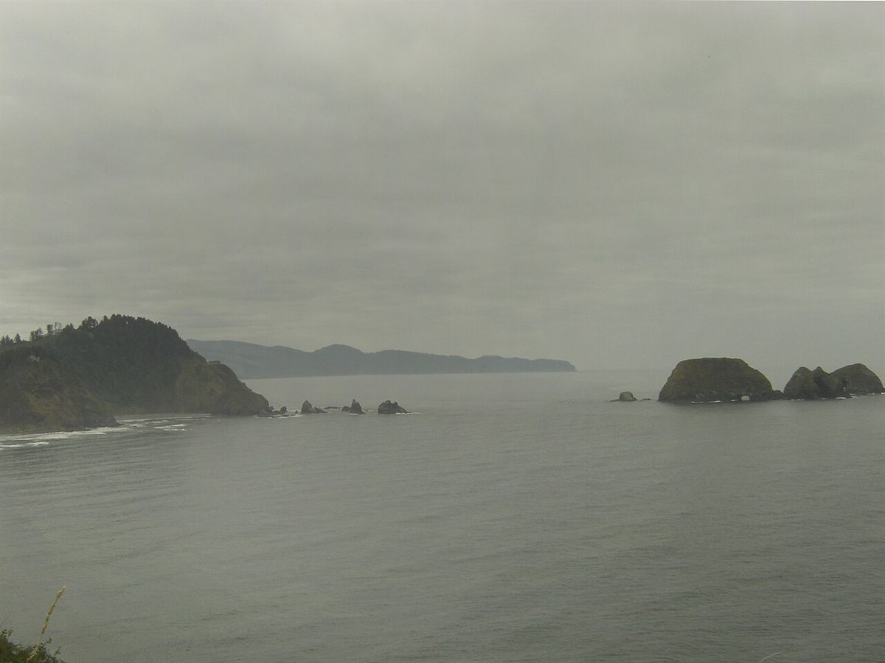
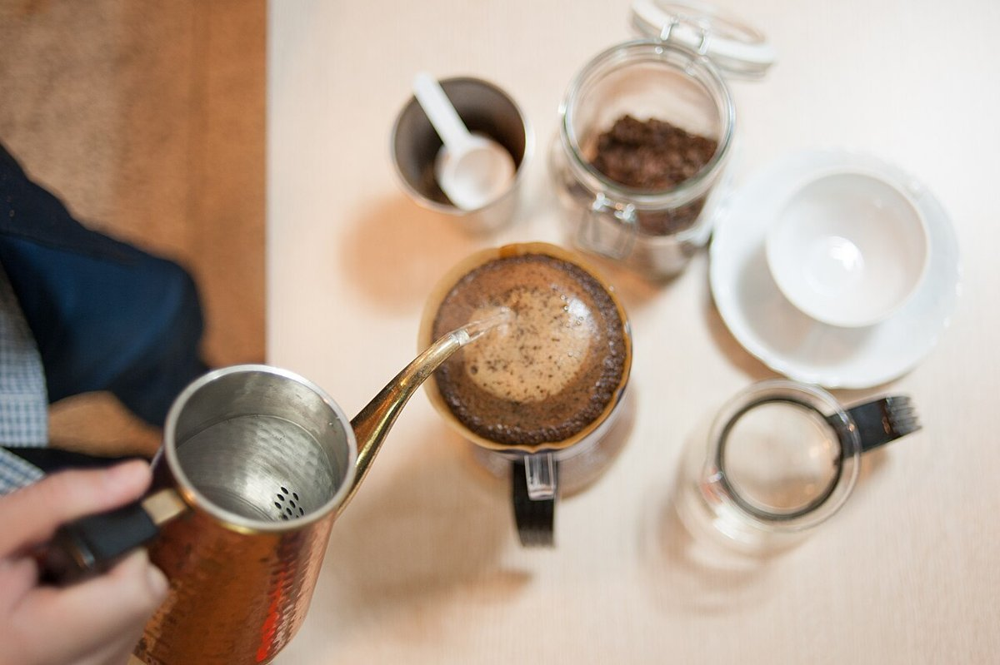

cafe X
朽ちながらも魅力を放つ島の記憶を、一杯のコーヒーとジェラートに。
長崎市松が枝町 ・ 軍艦島デジタルミュージアム1階写真: 「Foggy sea - west coast (32841917726)」 Theo Crazzolara / CC BY 2.0
お店の由来と想い
cafe Xは、長崎市松が枝町の軍艦島デジタルミュージアム1階にあるカフェです。2023年3月にオープンしたと紹介されています。店内は軍艦島をコンセプトに、石炭をイメージした壁などが設けられています。
ロゴには、軍艦島を象徴する「X階段」をもとにした「チョウ」があしらわれており、「朽ちながらも魅力を放つ永遠の存在」としてシンボル化されたと報じられています。
コーヒーは自家焙煎のスペシャルティコーヒー。注文を受けてから豆を挽き、エアロプレスで一杯ずつ抽出するとされています。ジェラートはイタリア製のマシンで素材から作られます。
店名「X」の意味は公開情報で確認できていません。ここでは断定せず、島の階段のかたちにちなむ印象を、制作側のイメージとして色と文字に映しています。

写真: 「Manual drip (pour-over) coffee」 Kim Sanso / CC0 1.0
メニュー
紹介記事などで確認できた品目です。価格・内容は変わることがあるため「準備中」とし、正式な情報を店舗さまにご確認のうえ掲載します。

コーヒー各種
エスプレッソ、ラテ、アメリカーノ、コールドブリューなど。「軍艦島ラテ」もあります。価格 準備中
写真: 「Latte art on cappuccino (Unsplash)」 Drew Coffman / CC0 1.0


ドリンク
コールドドリンクや、長崎産素材のお茶・ジュースなど。価格 準備中
写真: 「Iced Coffee in Glass - Sunshine Coffee - Laramie Cafe (53838344552)」 Tony Webster / CC BY 2.0

エスプレッソ
コーヒーのコクを楽しむ一杯。準備中
写真: 「Espresso with whipped cream (Unsplash)」 Daniel Robert (danielrobertdinu) / CC0 1.0
| 営業時間 | 準備中 |
|---|---|
| 定休日 | 準備中 |
| 電話 | 準備中 |


口コミ(イメージ例)
以下は制作側が作成したイメージ例です。実在のお客様の声ではありません。
軍艦島の見学の前に立ち寄りました。コーヒーがすっきりしていて、ジェラートと一緒にゆっくりできました。
壁の雰囲気が面白く、島の話を思い出しながらカステラ系の軽食をいただきました。
観光の合間の休憩にちょうどよい場所でした。冷たいドリンクが体にしみました。
アクセス
| 住所 | 〒850-0921 長崎県長崎市松が枝町5-6(軍艦島デジタルミュージアム1階) |
|---|---|
| 最寄り | 大浦天主堂駅から徒歩圏(掲載情報による) |
| 営業時間 | 準備中 |
| 電話 | 準備中 |
写真クレジット
掲載写真はフリー素材のイメージです。
- images/fog-sea.jpg: 「Foggy sea - west coast (32841917726)」 Theo Crazzolara / CC BY 2.0
- images/pour-over.jpg: 「Manual drip (pour-over) coffee」 Kim Sanso / CC0 1.0
- images/gelato.jpg: 「Icecream Gelato」 JESHOOTS.com / CC0 1.0
- images/latte.jpg: 「Latte art on cappuccino (Unsplash)」 Drew Coffman / CC0 1.0
- images/coffeecake.jpg: 「Coffee and coffee cake (Unsplash)」 Stephanie McCabe / CC0 1.0
- images/iced.jpg: 「Iced Coffee in Glass - Sunshine Coffee - Laramie Cafe (53838344552)」 Tony Webster / CC BY 2.0
- images/espcream.jpg: 「Espresso with whipped cream (Unsplash)」 Daniel Robert (danielrobertdinu) / CC0 1.0
- images/espresso-top.jpg: 「Espresso Coffee 01」 Jubair1985 / CC0 1.0
- images/rocky-coast.jpg: 「種差海岸の風景20210403-P1170349」 くろふね / CC BY 4.0
- images/beans-c.jpg: 「Roasted arabica coffee beans Minca」 Roger Burger / CC0 1.0
- images/melting.jpg: 「Melting Ice Cream (Unsplash)」 Evan Kirby / CC0 1.0
- images/icebar.jpg: 「Ice Cream Treat (Unsplash)」 Joseph Gonzalez / CC0 1.0